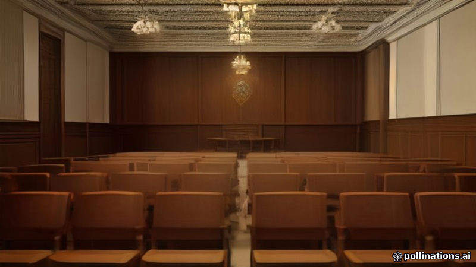

গেরার্ড ডেপার্ডিউকে ২০১৮ সালের ধর্ষণ মামলায় প্যারিসে বিচার হবে
Al Jazeera English, France 24 · 2026-11-26
AI-generated illustrationপ্যারিসের আদালত গেরার্ড ডেপার্ডিউয়ের ২০১৮ সালের ধর্ষণ অভিযোগ শোনাবে, অন্য অভিযোগ বাতিল হয়েছে।
ফরাসি চলচ্চিত্রের পরিচিত মুখ গেরার্ড ডেপার্ডিউকে ২০১৮ সালে অভিনেত্রী শার্লট আরনুল্ডের বিরুদ্ধে ধর্ষণের অভিযোগে প্যারিসে বিচার হতে যাচ্ছে, ফ্রান্স ২৪ জানিয়েছে। ডেপার্ডিউ নিজে এই অভিযোগ অস্বীকার করেছেন।
অ্যাল জাজিরা ইংরেজি অনুসারে, প্যারিস আপিল আদালত আরনুল্ডের সঙ্গে যুক্ত অন্য একটি ঘটনার অভিযোগ বাতিল করেছে। ফলে বিচার শুধুমাত্র ২০১৮ সালের মামলায় কেন্দ্রীভূত হবে।
Written by AI from facts reported by the outlets named above. It may contain errors; check the original reporting.English version
Gérard Depardieu to stand trial in Paris over 2018 rape allegation
French actor Gérard Depardieu is set to face trial in Paris over a 2018 rape allegation involving actress Charlotte Arnould, France 24 reported. Depardieu has denied any wrongdoing in the case.
Al Jazeera English noted that a Paris court of appeal dismissed allegations related to a second incident involving Arnould, leaving the 2018 case as the sole matter for trial.